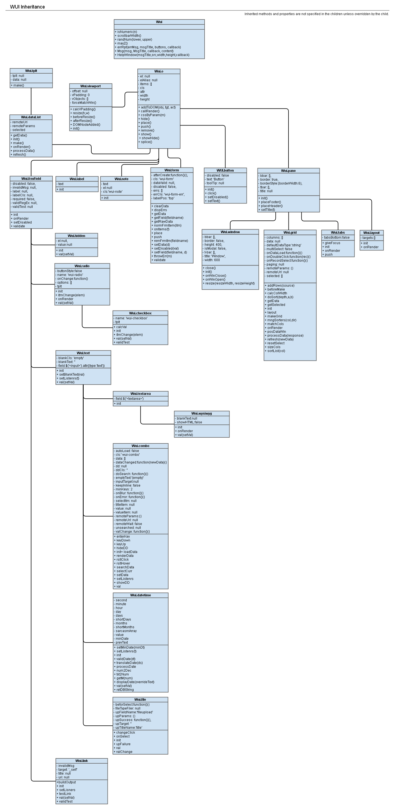

WUI
Webteam User Interface
version 1.1
Goals / Why Use it
- Its lightweight (currently @ 290K) on principle.
- Stay close to fundamental HTML, CSS and JavaScript
- Facilitate rapid app development
History
- Started out as a simple modal window interface I built for the web team at the USU Research Foundation. This inspired the totally original name.
- Expanded on by building some lightweight form elements for a content management system - ITS NOT A FRAMEWORK!!!
- Added some more advanced and really cool form elements (more on this later)
- Okay, its getting big, there's stuff that the CMS does that I want the forms to do, and maybe its a framework...
-
Yep, I'll admit it, its a framework, here is the file structure:
Webteam User Interface
grid.js
state.js
forms.js
wui.js
jQuery
- Definitely a framework, and I want to use this externally. Check it in to GitHub
- AAAAAHHH! People want to use it, I haven't written any documentation! Its actually kind of a mess! Aaaah! — Working on this one.
Why build on jQuery?
The WUI was built on jQuery initially because that was how I knew how to do the most, the easiest, with JavaScript. As my understanding of
JavaScript increased I was tempted to write everything in native JS, but I wanted to make this framework as easy for a beginner as possible,
and using jQuery facilitates that because it is so widely used.
Some Code
A Diagram
- First, a diagram of everything available (this is actually the WUI 1.0 diagram, I need to update!):

Core Concepts
- Prototypal Inheritance
- Its JavaScript!!! Yes, its built on jQuery, but its all just JavaScript, so relax. You can use it with other frameworks, you can write your own stuff. Its awesome.
- Check out the WUI Object to get a feeling for placing, hierarchy, push, splice and onRender.
Going Forward
Road Map
(aka Current Weaknesses)
- 1. Documentation needs some work
- 1. More testing. Its young! Increase the test bed, and create more unit tests.
- 1. Uniformity - Update, this is 95% better since I first wrote this document, almost done.
- How to structure apps - its not exactly MVC, but it'd sure be nice to get close, but not have it strictly enforced.